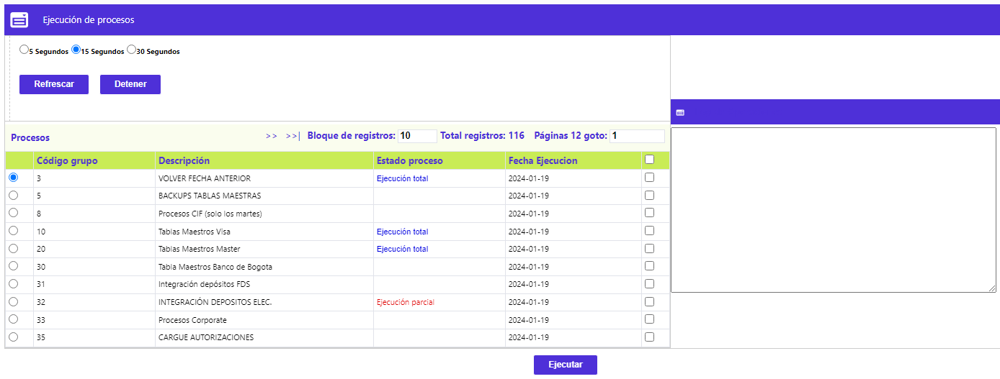
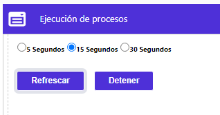

Ejecución grupos independientes
Este formulario muestra aquellos grupos de procesos que no hayan sido marcados en el campo Obligatorio de la opción Definición grupos de procesos. Esta opción sólo nos muestra los grupos de procesos a ser ejecutados manualmente, permitiendo incluso ejecutar algunos ellos, más de una vez, dentro de la misma fecha de proceso, si es necesario, siempre y cuando ello no implique la duplicidad de registros ya ingresados al sistema. Así mismo, la opción cuenta también con el enlace Procesos, el cual permite ejecutar, uno a uno, aquellos procesos que se requieran, sin ser necesario correr todo el grupo de procesos.
La pantalla principal se divide en dos partes en la cuales se encontrarán los Grupos de procesos a la izquierda, tal como se muestra en la siguiente imagen:

A la derecha de esta pantalla se ubica una ventana que funciona como log de operaciones, describiendo las acciones y resultados de cada uno de los procesos que han sido ejecutados.
A través de esta pantalla principal, el usuario puede decidir ejecutar todos los procesos pertenecientes al grupo que haya seleccionado , al usar el botón Ejecutar. De esta forma el sistema tomará todos aquellos procesos y los ejecutará de acuerdo a la parametrización de precedentes realizada a través de la opción Definición grupos de procesos.
El sistema refrescará la pantalla junto con el log de operaciones de acuerdo a los rangos de tiempo definidos en la parte superior. Estos pueden establecerse entre 5, 15 ó 30 segundos. Por defecto estos rangos están apagados y sólo se activan al seleccionar uno de ellos y luego usar los botones Detener y luego Refrescar.

Antes de iniciar el cargue de un grupo, el sistema los muestra con el campo Estado proceso en blanco. Luego éste varia de acuerdo al estado de los procesos ejecutados.
|
Proceso en ejecución |
El sistema está corriendo el paquete del proceso. |
|
Ejecución parcial |
El sistema ha presentado algún error que puede ser consultado directamente en el log de operaciones o en el Histórico de procesos. |
|
Ejecución total |
El proceso ha finalizado exitosamente. |
|
Proceso pendiente o Proceso en cola: |
El sistema identifica estos procesos como pendientes por ejecutar. |
Procesos: Este enlace muestra un nuevo formulario desde el Grupo desde el cual se invocó, lo que le permite a la entidad, ejecutar algunos de los procesos de manera selectiva, sin necesidad de correrlos todos en conjunto. De igual forma permite la ejecución de estos tantas veces sea necesario, por ejemplo en el caso de los cargues de franquicias o de algunos convenios.
Tal como aplica para la ejecución de Grupos antes descrita, este formulario permite la selección de uno o varios procesos a ejecutar, permitiendo su actualización a través de los mismos rangos de 5, 15 o 30 segundos, y mostrando el estado de los mismos y su Número de ejecuciones. En caso de presentarse algún error, será mostrado en el campo Mensaje de esta misma pantalla.
Ejecutar: Este botón especial, se debe activar cada vez que se requiera lanzar un Grupo completo de procesos o un proceso en particular, previa selección del mismo, marcando la casilla al final del registro.